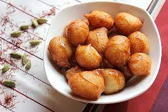

Dumplings

Decsription
Dumpling is a broad class of dishes that consist of pieces of dough wrapped around a filling, or of dough with no filling.
The dough can be based on bread, flour or potatoes, and may be filled with meat, fish, cheese, vegetables, fruits or sweets.
Igredients
- 3/4 cup (155g) brown sugar
- 1/3 cup (80ml) golden syrup
- 100g slightly salted butter
- 1 1/2 cups (225g) self-raising flour
- 3/4 cup (185ml) milk
Steps
- Combine 2 cups (500ml) water, brown sugar, 1/4 cup (60ml) golden syrup and 50g butter in a large saucepan. Stir over a low heat until melted.
- Meanwhile, use your fingertips to rub in 50g butter into flour. Combine milk and 1 tablespoon golden syrup. Stir into the flour mixture until well combined.
- Bring the sauce to the boil then drop heaped dessert spoonfuls of the mixture into the sauce. Reduce the heat to low and simmer, covered for 15-20 minutes or until a skewer comes out clean. Serve with ice cream.